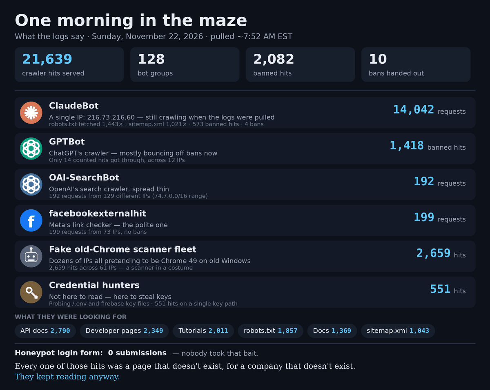

Crawler Maze
An endless maze for AI crawlers — an experiment, built for fun.

One morning in the maze, by the numbers, from the maze's own logs (Sunday, November 22, 2026).
The idea
The web is crawled constantly by AI bots — ClaudeBot, GPTBot and friends — that fetch pages, store what they find, and follow links at enormous scale. Most sites respond one of two ways: let the bots in, or try to keep them out. This project does neither. It feeds them.
Any subdomain of a wildcard domain that has no real site answers with a complete, plausible-looking hosting company: readable articles, plans and pricing, documentation, FAQs, testimonials — the works. Every page links onward to more pages and more subdomains. There is no last page. A crawler that wanders in finds what looks like a gold mine and just keeps digging.
Each subdomain is one self-consistent fake company. Its identity is seeded from the subdomain itself, so the same address always shows the same company — same brand, same prices, same people. But the network as a whole is infinite: every new subdomain is another company, another site to crawl, and no crawler ever finishes.
The point is an experiment: watch how crawlers behave when the web answers with fiction instead of walls — how deep they dig, how long they stay, and what they swallow without ever stepping back to notice the pattern. The heaviest crawlers are logged per subnet and eventually rate-limited, and a hidden login form catches the bots that try to sign up.
It's not a product. Nothing is sold, there are no real customers — just a maze, and the bots are the visitors it was built for.
Every one of those hits was a page that doesn't exist, for a company that doesn't exist. They kept reading anyway.
Run it yourself
The whole maze is one self-contained PHP file plus a small .htaccess. It also runs in Docker — one command, with a CI build that proves it works. Source, logs and instructions are on GitHub.